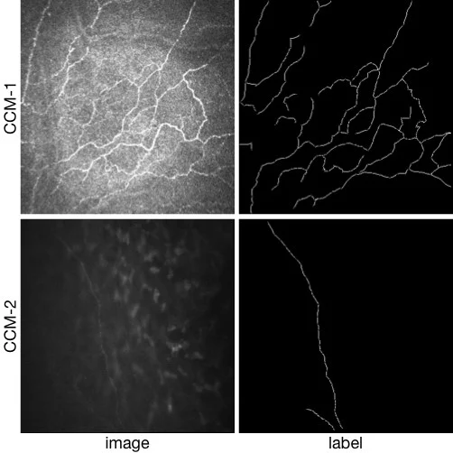
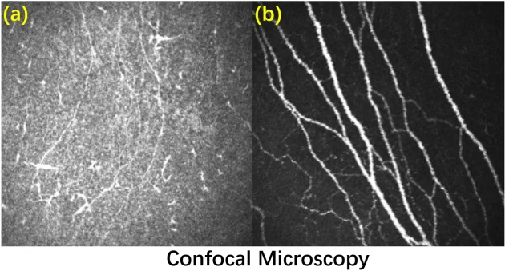
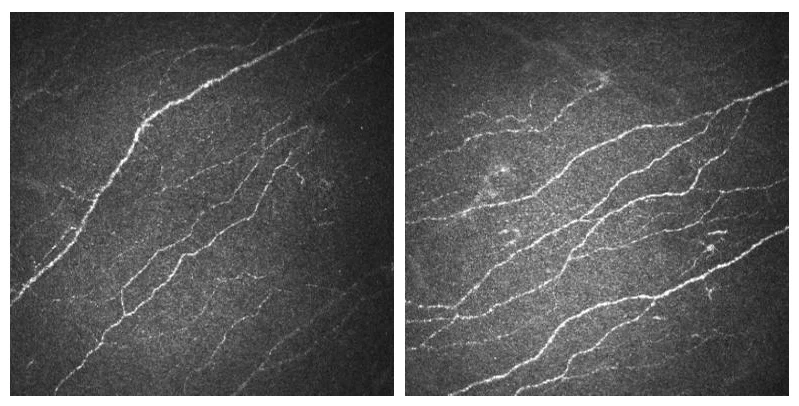
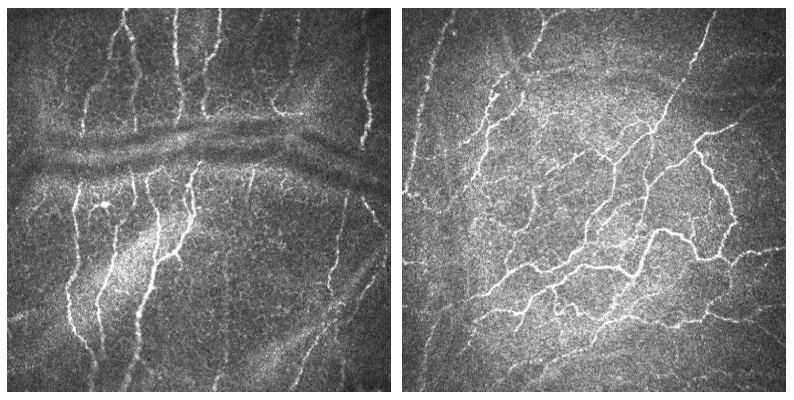
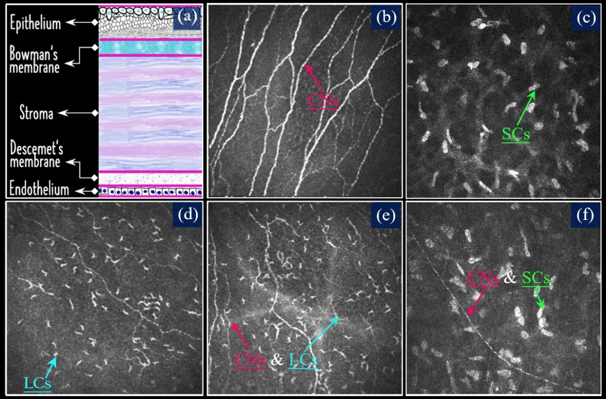

CORN: COrneal Nerve Database
These datasets are released for academic research use only.
Download
Please click on the provided link and complete the necessary REQUESTS information to proceed with your download.
https://doi.org/10.5281/zenodo.12776091
CORN-1: nerve segmentation dataset
Dataset Description
CORN-1 includes contains a total of 1698 CCM images of corneal subbasal epithelium using a Heidelberg Retina Tomograph equipped with a Rostock Cornea Module (HRT-III) microscope. These images were acquired by the Peking University Third Hospital, China and University of Padova, Italy.
Each image has a resolution of 384 × 384 pixels covering a FOV of 400 × 400 μm2. The manual annotations of the nerve fibres (centerline) in these two datasets were traced by an ophthalmologist using the open source software ImageJ.
Note: 120 original images were acquired by BioImLab, University of Padova. However, the manual annotation was made by our ophthalmologist.
Code: https://github.com/iMED-Lab/CS-Net

CORN-2: confocal image enhancement dataset
Dataset Description
CORN-2 was divided into low- and high-quality image domains for confocal image enhancement tasks.
A clinical expert was invited and selected 340 low and 288 high quality images in this dataset, respectively, for training and 60 low-quality images for test. For evaluation by nerve fiber segmentation, we also provided manual annotation of nerve fibers at centerline pixel level in the 60 testing images.
All the images of CORN-2 were acquired at size 384 × 384.
Code: https://github.com/iMED-Lab/StillGAN

(a)Low-quality image; (b) High-quality image
CORN-3: nerve tortuosity estimation dataset
Dataset Description
For automated tortuosity analysis of nerve fibers in corneal confocal microscopy, we constructed CORN-3 based on CCM-A.
CORN-3 was categorized into four groups based on fiber tortuosity level. An image analysis expert and the clinical author (obs 1 and obs 2) each independently labeled the tortuosity level according to a previously published protocol, and the consensus between them was then used as ground truth (GT), i.e., Level 1: the fibers appear almost straight (54 images); Level 2: the fibers appear moderately tortuous (212 images); Level 3: the fibers are quite tortuous; the amplitude of the changes in the fiber direction is quite severe (108 images); Level 4: the fibers appear very tortuous, presenting frequent changes in the fiber direction (29 images).
All the images of CORN-3 were acquired at size 384 × 384.

Level 1 Level 2

Level 3 Level 4
CORN1500: new nerve tortuosity estimation dataset
Dataset Description
CORN1500 is a new corneal nerve dataset which was particularly designed for tortuosity grading task. The newly-constructed CORN1500 aims to expand the dataset pool for tortuosity grading. Similar to CORN-3, all 1500 CCM in CORN1500 were acquired using a Heidelberg Retina Tomograph equipped with a Rostock Cornea Module (HRT-III) microscope. Each image has a resolution of 384 × 384 pixels covering a field of view of 400 × 400um2. All images were manually annotated by the same ophthalmologist as before into four tortuosity levels (level 1 to level 4) and divided into a training set (1200 images) and testing set (300 images).
Citation
- Yitian Zhao, Jiong Zhang, Ella Pereira, Yalin Zheng, Pan Su, Jianyang Xie, Yifan Zhao, Yonggang Shi, Hong Qi, Jiang Liu, Yonghuai Liu, Automated Tortuosity Analysis of Nerve Fibers in Corneal Confocal Microscopy, IEEE Transactions on Medical Imaging, 2020
- Lei Mou, Yitian Zhao, Li Chen, Jun Cheng, Zaiwang Gu, Huaying Hao, Hong Qi, Yalin Zheng, Alejandro Frangi, Jiang Liu, CS-Net: Channel and Spatial Attention Network for Curvilinear Structure Segmentation, Medical Image Computing and Computer-Assisted Intervention, 2019.
- Yuhui Ma, Yonghuai Liu, Jun Cheng, Yalin Zheng, Morteza Ghahremani, Honghan Chen, Jiang Liu, and Yitian Zhao, Cycle Structure and Illumination Constrained GAN for Medical Image Enhancement, Medical Image Computing and Computer-Assisted Intervention, 2020.
CORN-Pro: new nerve and cell segmentation dataset
Dataset Description
To the best of our knowledge, no publicly available dataset exists for the segmentation of Langerhans cells (LCs) or stromal cells (SCs). To address this gap, we have extended the CORN dataset by introducing a new subset, CORN-4, specifically designed for segmentation tasks involving LCs and SCs. CORN-4 consists of 1,120 corneal confocal microscopy (CCM) images captured using the Heidelberg Retina Tomography System with the Rostock Cornea Module (HRT-III). The dataset includes 560 images featuring both corneal nerves and LCs, and another 560 images displaying corneal nerves and/or stromal cells. All images were acquired at a distance of 40-60 μm from the anterior surface of the central cornea, with a resolution of 384 × 384 pixels, covering an area of 400 × 400 μm. Manual annotation was carried out by an image analysis expert using the open-source software ITK-SNAP, and the labels were subsequently reviewed and corrected by a senior ophthalmologist.
Citation
- Li, Hongshuo and Ma, Baikai and Mou, Lei and Liu, Yonghuai and Zheng, Qinxiang and Qi, Hong and Zhao, Yitian. Progressive distillation for incremental learning in corneal confocal microscopy segmentation[J]. IEEE Transactions on Medical Imaging, 2025.
